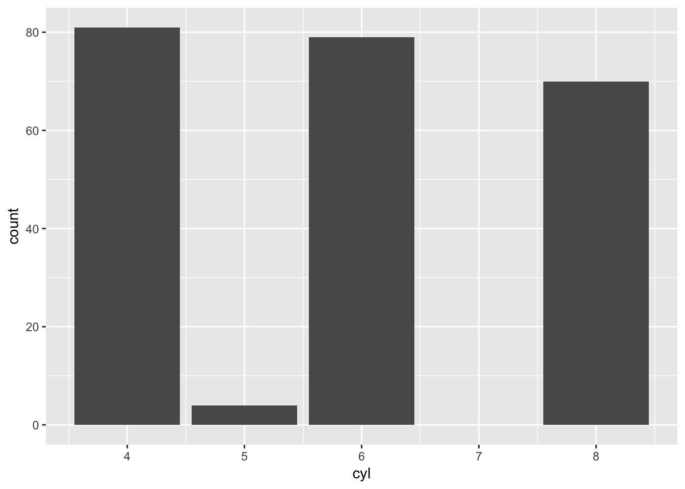
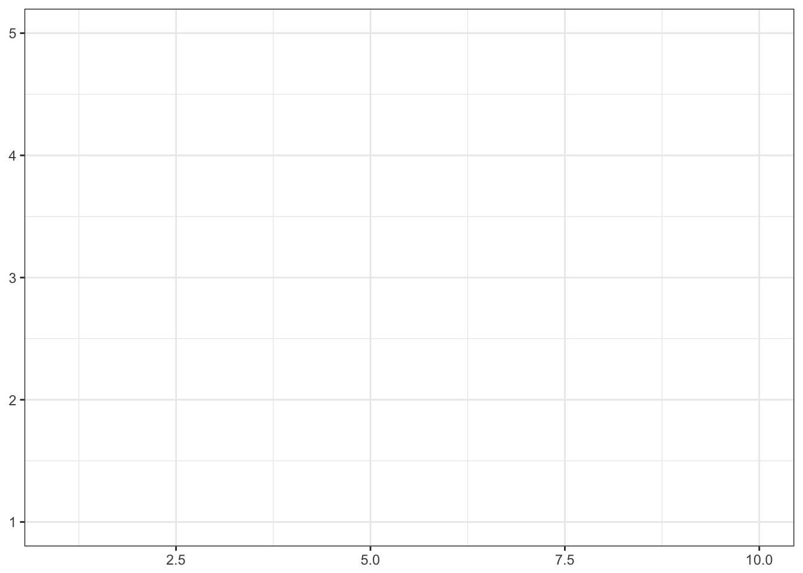

Visualizations and the grammar of graphics
Objectives
- Identify the importance of graphics in communicating information
- Define the layered grammar of graphics
- Practice generating layered graphics using
ggplot2
library(tidyverse)
library(knitr)
library(broom)Identify the importance of graphics in communicating information
Research methods classes in graduate school generally teach important skills such as probability and statistical theory, regression, analysis of variance (ANOVA), maximum likelihood estimation (MLE). While these are important methods for analyzing data and assessing research questions, sometimes drawing a picture (aka visualization) can be more precise than conventional statistical computations (see Tufte and Graves-Morris (1983) for much more on this topic).
Consider the following data sets:
[[1]]
| x | y |
|---|---|
| 10 | 8.04 |
| 8 | 6.95 |
| 13 | 7.58 |
| 9 | 8.81 |
| 11 | 8.33 |
| 14 | 9.96 |
| 6 | 7.24 |
| 4 | 4.26 |
| 12 | 10.84 |
| 7 | 4.82 |
| 5 | 5.68 |
[[2]]
| x | y |
|---|---|
| 10 | 9.14 |
| 8 | 8.14 |
| 13 | 8.74 |
| 9 | 8.77 |
| 11 | 9.26 |
| 14 | 8.10 |
| 6 | 6.13 |
| 4 | 3.10 |
| 12 | 9.13 |
| 7 | 7.26 |
| 5 | 4.74 |
[[3]]
| x | y |
|---|---|
| 10 | 7.46 |
| 8 | 6.77 |
| 13 | 12.74 |
| 9 | 7.11 |
| 11 | 7.81 |
| 14 | 8.84 |
| 6 | 6.08 |
| 4 | 5.39 |
| 12 | 8.15 |
| 7 | 6.42 |
| 5 | 5.73 |
[[4]]
| x | y |
|---|---|
| 8 | 6.58 |
| 8 | 5.76 |
| 8 | 7.71 |
| 8 | 8.84 |
| 8 | 8.47 |
| 8 | 7.04 |
| 8 | 5.25 |
| 19 | 12.50 |
| 8 | 5.56 |
| 8 | 7.91 |
| 8 | 6.89 |
# get stats
dat %>%
group_by(id) %>%
summarize(n = n(),
mean_x = mean(x),
mean_y = mean(y),
cor = cor(x, y))## # A tibble: 4 × 5
## id n mean_x mean_y cor
## <chr> <int> <dbl> <dbl> <dbl>
## 1 1 11 9 7.500909 0.8164205
## 2 2 11 9 7.500909 0.8162365
## 3 3 11 9 7.500000 0.8162867
## 4 4 11 9 7.500909 0.8165214# estimate linear model
dat %>%
split(.$id) %>%
map(~ lm(y ~ x, data = .x)) %>%
map(tidy)## $`1`
## term estimate std.error statistic p.value
## 1 (Intercept) 3.0000909 1.1247468 2.667348 0.025734051
## 2 x 0.5000909 0.1179055 4.241455 0.002169629
##
## $`2`
## term estimate std.error statistic p.value
## 1 (Intercept) 3.000909 1.1253024 2.666758 0.025758941
## 2 x 0.500000 0.1179637 4.238590 0.002178816
##
## $`3`
## term estimate std.error statistic p.value
## 1 (Intercept) 3.0024545 1.1244812 2.670080 0.025619109
## 2 x 0.4997273 0.1178777 4.239372 0.002176305
##
## $`4`
## term estimate std.error statistic p.value
## 1 (Intercept) 3.0017273 1.1239211 2.670763 0.025590425
## 2 x 0.4999091 0.1178189 4.243028 0.002164602# now draw a graph
ggplot(dat, aes(x, y)) +
facet_wrap(~id) +
geom_point()
A good picture tells the reader much more than any table or text can provide (though tables also have their purpose too).
Define the layered grammar of graphics
For more detailed information, see (Wickham 2010).
- Grammar - the whole system and structure of a language or of languages in general, usually taken as consisting of syntax and morphology (including inflections) and sometimes also phonology and semantics.1
- “The fundamental principles or rules of an art or science” (Wickham 2010)
- Grammar of graphics - a grammar used to describe and create a wide range of statistical graphics
The layered grammar of graphics approach is implemented in ggplot2, a widely used graphics library for R. All graphics in this library are built using a layered approach, building layers up to create the final graphic.
Components of the layered grammar of graphics
- Layer
- Data
- Mapping
- Statistical transformation (stat)
- Geometric object (geom)
- Position adjustment (position)
- Scale
- Coordinate system (coord)
- Faceting (facet)
- Defaults
- Data
- Mapping
Layer
Layers are responsible for creating the objects that we perceive on the plot. Layers are defined by the data and aesthetic mapping, a statistical transformation, a geometric object, and a position adjustment. Usually all the layers have something in common. So for example, you might overlay a scatterplot with a smoothed regression line to summarize the relationship between the variables.
Data and mapping
Data defines the source of the information to be visualized, but is independent from the other elements. So a layered graphic can be built which can utilize different data sources while keeping the other components the same.
mpg## # A tibble: 234 × 11
## manufacturer model displ year cyl trans drv cty hwy
## <chr> <chr> <dbl> <int> <int> <chr> <chr> <int> <int>
## 1 audi a4 1.8 1999 4 auto(l5) f 18 29
## 2 audi a4 1.8 1999 4 manual(m5) f 21 29
## 3 audi a4 2.0 2008 4 manual(m6) f 20 31
## 4 audi a4 2.0 2008 4 auto(av) f 21 30
## 5 audi a4 2.8 1999 6 auto(l5) f 16 26
## 6 audi a4 2.8 1999 6 manual(m5) f 18 26
## 7 audi a4 3.1 2008 6 auto(av) f 18 27
## 8 audi a4 quattro 1.8 1999 4 manual(m5) 4 18 26
## 9 audi a4 quattro 1.8 1999 4 auto(l5) 4 16 25
## 10 audi a4 quattro 2.0 2008 4 manual(m6) 4 20 28
## # ... with 224 more rows, and 2 more variables: fl <chr>, class <chr>Mapping defines how the variables are applied to the graphic. So if we were graphing information about mpg, we might map a car’s engine displacement to the \(x\) position and highway mileage to the \(y\) position.
mpg %>%
select(displ, hwy) %>%
rename(x = displ,
y = hwy)## # A tibble: 234 × 2
## x y
## <dbl> <int>
## 1 1.8 29
## 2 1.8 29
## 3 2.0 31
## 4 2.0 30
## 5 2.8 26
## 6 2.8 26
## 7 3.1 27
## 8 1.8 26
## 9 1.8 25
## 10 2.0 28
## # ... with 224 more rowsGeometric objects
Geometric objects control the type of plot you create. Geoms are classified by their dimensionality:
- 0 dimensions - point, text
- 1 dimension - path, line
- 2 dimensions - polygon, interval
Each geom can only display certain aesthetics. For example, a point geom has position, color, shape, and size aesthetics. A bar geom has position, height, width, and fill color.
ggplot(mpg, aes(displ, hwy)) +
geom_point()
ggplot(mpg, aes(cyl)) +
geom_bar()
Statistical transformation
A statistical transformation (stat) transforms the data, typically by summarizing the information. For instance, in a bar graph you typically are not trying to graph the raw data because this doesn’t make any inherent sense. Instead, you might summarize the data by graphing the total number of observations within a set of categories. A stat takes a dataset as input and returns a dataset as output, and so a stat can add new variables to the original dataset. So instead of graphing this data in its raw form:
mpg %>%
select(cyl)## # A tibble: 234 × 1
## cyl
## <int>
## 1 4
## 2 4
## 3 4
## 4 4
## 5 6
## 6 6
## 7 6
## 8 4
## 9 4
## 10 4
## # ... with 224 more rowsYou would transform it to:
mpg %>%
count(cyl)## # A tibble: 4 × 2
## cyl n
## <int> <int>
## 1 4 81
## 2 5 4
## 3 6 79
## 4 8 70ggplot(mpg, aes(cyl)) +
geom_bar()
Sometimes you don’t need to make a statistical transformation. So going back to our engine displacement vs. highway mileage graph, here the statistical transformation is an identity transformation - the stat simply passes in the original dataset and exports the exact same dataset.
Position adjustment
Sometimes we need to tweak the position of the geometric elements on the plot, when otherwise they would obscure each other. This is most common in bar plots, where we stack or dodge (place side-by-side) the bars to avoid overlaps. In scatterplots with few unique \(x\) and \(y\) values, we sometimes randomly jitter the points to reduce overplotting.
ggplot(mpg, aes(cyl, hwy)) +
geom_point()
ggplot(mpg, aes(cyl, hwy)) +
geom_jitter()
Scale
A scale controls the mapping from data to aesthetic attributes, and so we need one scale for each aesthetic property used in a layer. Scales are common across layers to ensure a consistent mapping from data to aesthetics.
ggplot(mpg, aes(displ, hwy, color = class)) +
geom_point()
ggplot(mpg, aes(displ, hwy, size = cyl)) +
geom_point()
Coordinate system
A coordinate system (coord) maps the position of objects onto the plane of the plot. Position is often specified by two coordinates (x, y), but could be any number of coordinates. The Cartesian coordinate system is the most common coordinate system for two dimensions, whereas polar coordinates and various map projections are used less frequently.
x1 <- c(1, 10)
y1 <- c(1, 5)
p <- qplot(x1, y1, geom = "blank", xlab = NULL, ylab = NULL) +
theme_bw()
p 
p + coord_trans(y = "log10")
p + coord_polar()
Faceting
Faceting can be used to split the data up into subsets of the entire dataset. This is a powerful tool when investigating whether patterns are the same or different across conditions. The faceting specification describes which variables should be used to split up the data, and how they should be arranged.
ggplot(mpg, aes(displ, hwy)) +
geom_point() +
facet_wrap(~class)
Defaults
Rather than explicitly declaring each component of a layered graphic (which will use more code and introduces opportunities for errors), we can establish intelligent defaults for specific geoms and scales. For instance, whenever we want to use a bar geom, we can default to using a stat that counts the number of observations in each group of our variable in the \(x\) position.
ggplot() +
layer(
data = mpg, mapping = aes(x = displ, y = hwy),
geom = "point", stat = "identity", position = "identity"
) +
scale_x_continuous() +
scale_y_continuous() +
coord_cartesian()This code:
- Creates a new plot object (
ggplot) - Adds a layer (
layer)- Specifies the dataset (
mpg) - Maps engine displacement to the \(x\) position and highway mileage to the \(y\) position (
mapping) - Uses the point geometric transformation (
geom = "point") - Implements an identity transformation and position (
stat = "identity"andposition = "identity")
- Specifies the dataset (
- Establishes two continuous position scales (
scale_x_continuousandscale_y_continuous) - Declares a cartesian coordinate system (
coord_cartesian)
How can we simplify this using intelligent defaults?
- We only need to specify a geom, since each geom has a default stat.
- Cartesian coordinate systems are most commonly used, so it is the default.
- Default scales can be added based on the aesthetic and type of variables.
- Continuous values are transformed with a linear scaling
- Discrete values are mapped to integers
- Scales for aesthetics such as color, fill, and size can also be intelligently defaulted
ggplot() +
layer(
data = mpg, mapping = aes(x = displ, y = hwy),
geom = "point"
)Because multiple layers can use the same components (data, mapping, etc.), we can specify that information in the ggplot function:
ggplot(data = mpg, mapping = aes(x = displ, y = hwy)) +
geom_point()And as we will learn, function arguments in R use specific ordering, so we can omit the explicit call to data and mapping:
ggplot(mpg, aes(displ, hwy)) +
geom_point()
With this specification, it is easy to build the graphic up with additional layers, without modifying the original code:
ggplot(mpg, aes(displ, hwy)) +
geom_point() +
geom_smooth()## `geom_smooth()` using method = 'loess'
How to build a complicated, layered graphic
Charles Minard’s map of Napoleon’s disastrous Russian campaign of 1812

The graphic is notable for its representation in two dimensions of six types of data: the number of Napoleon’s troops; distance; temperature; the latitude and longitude; direction of travel; and location relative to specific dates.
Building Minard’s map in R
# get data on troop movements and city names
troops <- read_table("data/minard-troops.txt")
cities <- read_table("data/minard-cities.txt")
troops## # A tibble: 51 × 5
## long lat survivors direction group
## <dbl> <dbl> <int> <chr> <int>
## 1 24.0 54.9 340000 A 1
## 2 24.5 55.0 340000 A 1
## 3 25.5 54.5 340000 A 1
## 4 26.0 54.7 320000 A 1
## 5 27.0 54.8 300000 A 1
## 6 28.0 54.9 280000 A 1
## 7 28.5 55.0 240000 A 1
## 8 29.0 55.1 210000 A 1
## 9 30.0 55.2 180000 A 1
## 10 30.3 55.3 175000 A 1
## # ... with 41 more rowscities## # A tibble: 20 × 3
## long lat city
## <dbl> <dbl> <chr>
## 1 24.0 55.0 Kowno
## 2 25.3 54.7 Wilna
## 3 26.4 54.4 Smorgoni
## 4 26.8 54.3 Moiodexno
## 5 27.7 55.2 Gloubokoe
## 6 27.6 53.9 Minsk
## 7 28.5 54.3 Studienska
## 8 28.7 55.5 Polotzk
## 9 29.2 54.4 Bobr
## 10 30.2 55.3 Witebsk
## 11 30.4 54.5 Orscha
## 12 30.4 53.9 Mohilow
## 13 32.0 54.8 Smolensk
## 14 33.2 54.9 Dorogobouge
## 15 34.3 55.2 Wixma
## 16 34.4 55.5 Chjat
## 17 36.0 55.5 Mojaisk
## 18 37.6 55.8 Moscou
## 19 36.6 55.3 Tarantino
## 20 36.5 55.0 Malo-JarosewiiLet’s sketch out what the grammar of graphics will look for this graph:
- Layer
- Data -
troops - Mapping
- \(x\) and \(y\) - troop position (
latandlong) - Size -
survivors - Color -
direction
- \(x\) and \(y\) - troop position (
- Statistical transformation (stat) -
identity - Geometric object (geom) -
path - Position adjustment (position) - none
- Data -
- Layer
- Data -
cities - Mapping
- \(x\) and \(y\) - city position (
latandlong) - Label -
city
- \(x\) and \(y\) - city position (
- Statistical transformation (stat) -
identity - Geometric object (geom) -
text - Position adjustment (position) - none
- Data -
- Scale
- Size - range of widths for troop
path - Color - colors to indicate advancing or retreating troops
- Size - range of widths for troop
- Coordinate system - map projection (Mercator or something else)
- Faceting - none
# build plot of troop movement
plot_troops <- ggplot(troops, aes(long, lat)) +
geom_path(aes(size = survivors,
color = direction,
group = group))
plot_troops
# add city location
plot_both <- plot_troops +
geom_text(data = cities, aes(label = city), size = 4)
plot_both
# clean plot up
plot_polished <- plot_both +
scale_size(range = c(0, 12),
breaks = c(10000, 20000, 30000),
labels = c("10,000", "20,000", "30,000")) +
scale_color_manual(values = c("tan", "grey50")) +
coord_map() +
labs(title = "Map of Napoleon's Russian campaign of 1812",
x = NULL,
y = NULL)
plot_polished
plot_polished +
theme_void() +
theme(legend.position = "none")
Practice generating layered graphics using ggplot2
gapminder
Load the gapminder dataset into your environment.
library(ggplot2)
library(tibble)
# install.packages("gapminder")
library(gapminder)
data("gapminder")
str(gapminder)## Classes 'tbl_df', 'tbl' and 'data.frame': 1704 obs. of 6 variables:
## $ country : Factor w/ 142 levels "Afghanistan",..: 1 1 1 1 1 1 1 1 1 1 ...
## $ continent: Factor w/ 5 levels "Africa","Americas",..: 3 3 3 3 3 3 3 3 3 3 ...
## $ year : int 1952 1957 1962 1967 1972 1977 1982 1987 1992 1997 ...
## $ lifeExp : num 28.8 30.3 32 34 36.1 ...
## $ pop : int 8425333 9240934 10267083 11537966 13079460 14880372 12881816 13867957 16317921 22227415 ...
## $ gdpPercap: num 779 821 853 836 740 ...gapminder## # A tibble: 1,704 × 6
## country continent year lifeExp pop gdpPercap
## <fctr> <fctr> <int> <dbl> <int> <dbl>
## 1 Afghanistan Asia 1952 28.801 8425333 779.4453
## 2 Afghanistan Asia 1957 30.332 9240934 820.8530
## 3 Afghanistan Asia 1962 31.997 10267083 853.1007
## 4 Afghanistan Asia 1967 34.020 11537966 836.1971
## 5 Afghanistan Asia 1972 36.088 13079460 739.9811
## 6 Afghanistan Asia 1977 38.438 14880372 786.1134
## 7 Afghanistan Asia 1982 39.854 12881816 978.0114
## 8 Afghanistan Asia 1987 40.822 13867957 852.3959
## 9 Afghanistan Asia 1992 41.674 16317921 649.3414
## 10 Afghanistan Asia 1997 41.763 22227415 635.3414
## # ... with 1,694 more rowsWhat is the average life expectancy, per continent?
ggplot(gapminder, aes(continent, lifeExp)) +
geom_boxplot()
What is the relationship between GDP and life expectancy?
ggplot(gapminder, aes(gdpPercap, lifeExp)) +
geom_point() +
geom_smooth()## `geom_smooth()` using method = 'gam'
Bonus: what is causing the outlier in gdpPercap?
ggplot(gapminder, aes(gdpPercap, lifeExp)) +
geom_point() +
geom_smooth() +
geom_text(aes(label = country))## `geom_smooth()` using method = 'gam'
Session Info
Session information:
devtools::session_info()## Session info --------------------------------------------------------------## setting value
## version R version 3.3.1 (2016-06-21)
## system x86_64, darwin13.4.0
## ui X11
## language (EN)
## collate en_US.UTF-8
## tz America/Chicago
## date 2016-12-30## Packages ------------------------------------------------------------------## package * version date source
## assertthat 0.1 2013-12-06 CRAN (R 3.3.0)
## backports 1.0.4 2016-10-24 CRAN (R 3.3.0)
## broom * 0.4.1 2016-06-24 CRAN (R 3.3.0)
## codetools 0.2-15 2016-10-05 CRAN (R 3.3.0)
## colorspace 1.3-2 2016-12-14 CRAN (R 3.3.2)
## DBI 0.5-1 2016-09-10 CRAN (R 3.3.0)
## devtools 1.12.0 2016-06-24 CRAN (R 3.3.0)
## digest 0.6.10 2016-08-02 CRAN (R 3.3.0)
## dplyr * 0.5.0 2016-06-24 CRAN (R 3.3.0)
## evaluate 0.10 2016-10-11 CRAN (R 3.3.0)
## foreign 0.8-67 2016-09-13 CRAN (R 3.3.0)
## gapminder * 0.2.0 2015-12-31 CRAN (R 3.3.0)
## ggplot2 * 2.2.0.9000 2016-12-02 Github (hadley/ggplot2@f6f9f9d)
## gtable 0.2.0 2016-02-26 CRAN (R 3.3.0)
## highr 0.6 2016-05-09 CRAN (R 3.3.0)
## htmltools 0.3.5 2016-03-21 CRAN (R 3.3.0)
## knitr * 1.15.1 2016-11-22 cran (@1.15.1)
## lattice 0.20-34 2016-09-06 CRAN (R 3.3.0)
## lazyeval 0.2.0 2016-06-12 CRAN (R 3.3.0)
## magrittr 1.5 2014-11-22 CRAN (R 3.3.0)
## memoise 1.0.0 2016-01-29 CRAN (R 3.3.0)
## mnormt 1.5-5 2016-10-15 CRAN (R 3.3.0)
## munsell 0.4.3 2016-02-13 CRAN (R 3.3.0)
## nlme 3.1-128 2016-05-10 CRAN (R 3.3.1)
## plyr 1.8.4 2016-06-08 CRAN (R 3.3.0)
## psych 1.6.9 2016-09-17 cran (@1.6.9)
## purrr * 0.2.2 2016-06-18 CRAN (R 3.3.0)
## R6 2.2.0 2016-10-05 CRAN (R 3.3.0)
## Rcpp 0.12.8 2016-11-17 CRAN (R 3.3.2)
## readr * 1.0.0 2016-08-03 CRAN (R 3.3.0)
## reshape2 1.4.2 2016-10-22 CRAN (R 3.3.0)
## rmarkdown 1.3 2016-12-21 CRAN (R 3.3.2)
## rprojroot 1.1 2016-10-29 CRAN (R 3.3.0)
## scales 0.4.1 2016-11-09 CRAN (R 3.3.1)
## stringi 1.1.2 2016-10-01 CRAN (R 3.3.0)
## stringr 1.1.0 2016-08-19 cran (@1.1.0)
## tibble * 1.2 2016-08-26 cran (@1.2)
## tidyr * 0.6.0 2016-08-12 CRAN (R 3.3.0)
## tidyverse * 1.0.0 2016-09-09 CRAN (R 3.3.0)
## withr 1.0.2 2016-06-20 CRAN (R 3.3.0)
## yaml 2.1.14 2016-11-12 cran (@2.1.14)References
Tufte, Edward R, and PR Graves-Morris. 1983. The Visual Display of Quantitative Information. Vol. 2. 9. Graphics press Cheshire, CT.
Wickham, Hadley. 2010. “A Layered Grammar of Graphics.” Journal of Computational and Graphical Statistics 19 (1): 3–28. doi:10.1198/jcgs.2009.07098.
This work is licensed under the CC BY-NC 4.0 Creative Commons License.